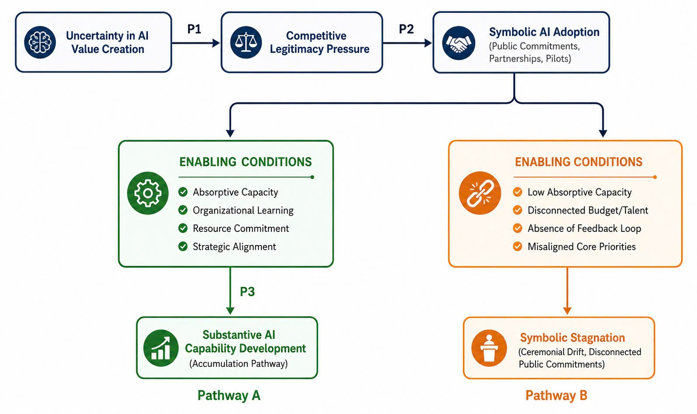
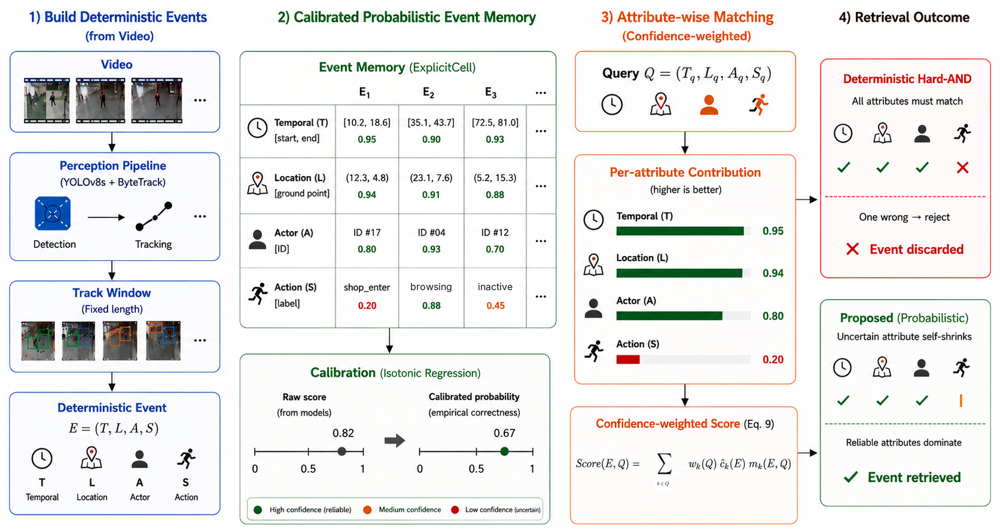
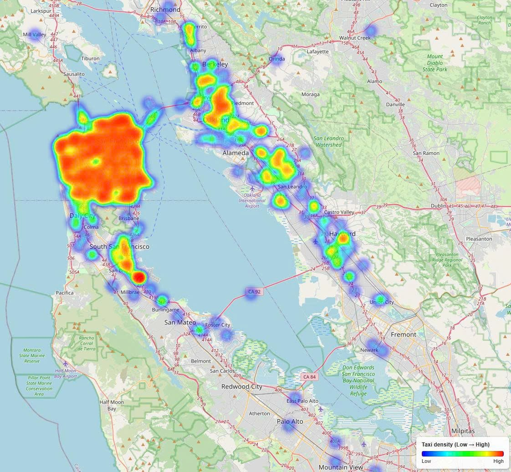
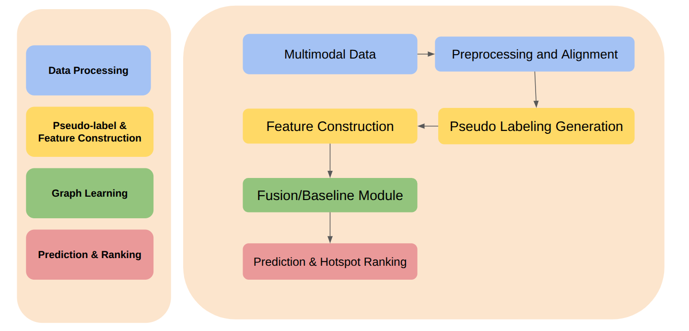
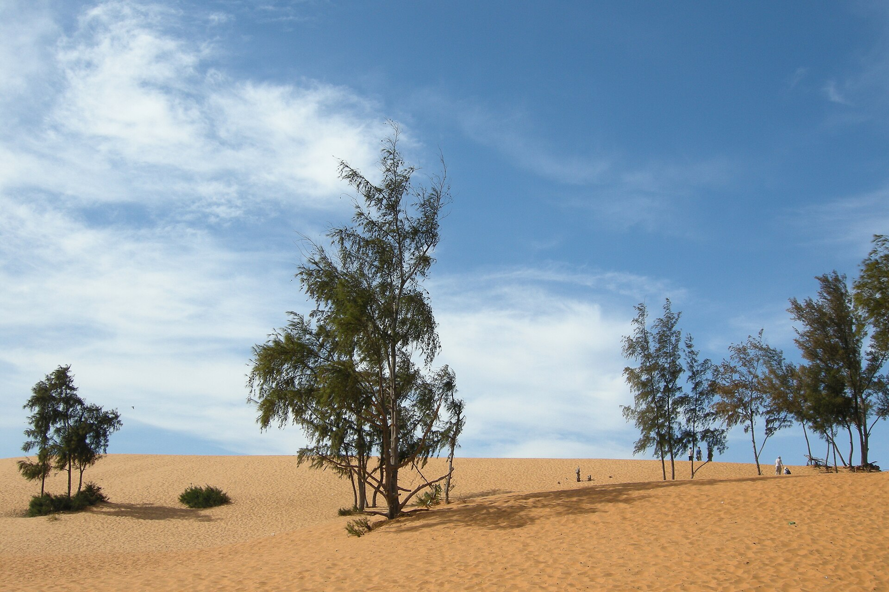
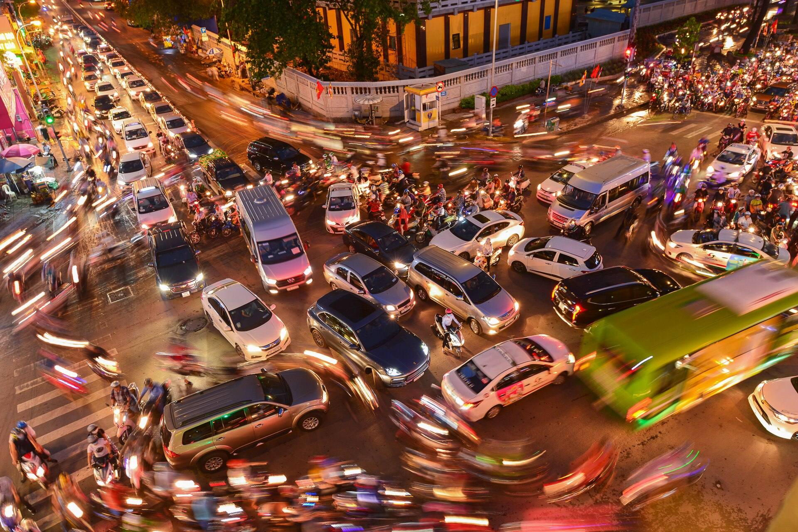
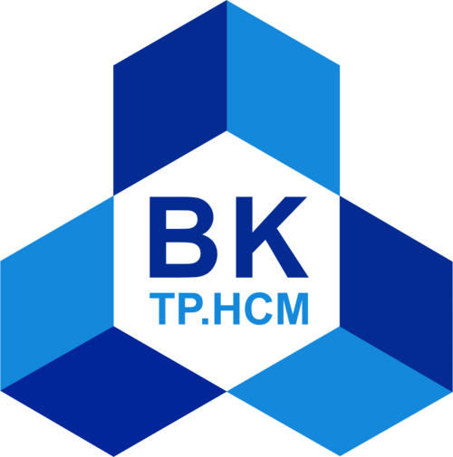
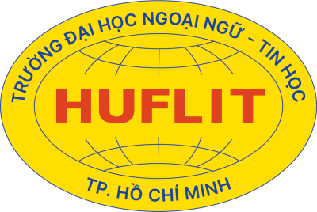

Symbolic AI adoption in emerging-market firms (accepted 2026)
why firms announce AI before they can use it, and when that turns into real capability · read more







OSiV is a young research group in Ho Chi Minh City working on reliable AI and on the digital transformation of local economies, culture and heritage. We build AI that stays dependable when its inputs are uncertain, and we work with provinces and cooperatives to turn farm produce, crafts and heritage into lasting value through data. We publish at international conferences and in Vietnamese journals, prepare applied projects with provincial Departments of Science and Technology, and train young researchers from a first question to a submitted paper.



Our members and co-authors come from these institutions. We prepare projects together with provincial Departments of Science and Technology.

